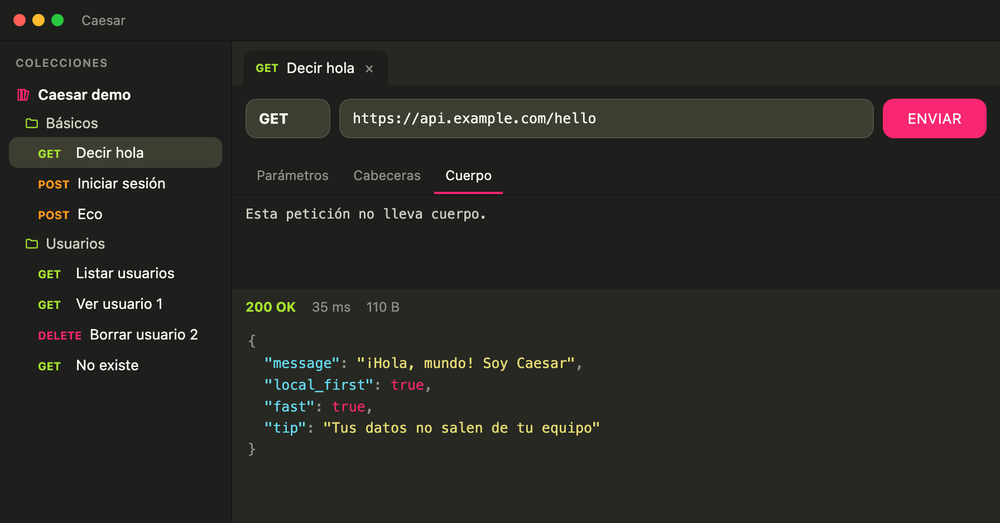

El cliente API que no devora tu RAM.
Postman e Insomnia se volvieron corporativos. Caesar es nativo (Tauri + Rust), vuela en tu máquina, y sincroniza tus colecciones con cifrado E2E por el precio de dos cafés.
Gratis en modo Invitado · macOS, Windows y Linux
Por qué Caesar
Hecho para ir rápido. Pensado para no estorbar.
Sincronización invisible (Sync E2E)
Magia en la nube, pero ni Google ni nosotros podemos leer tus datos.
Velocidad nativa
Adiós a Electron. Construido en Tauri y Rust.
Importador mágico
Pega un comando cURL con Ctrl+V y la interfaz se genera sola.
-H "Content-Type: application/json" \
-d '{"name":"Ada"}'
Gestión rápida
Cambia de entornos (AWS DEV, Local) al instante y protege tus secretos en el OS Keyring.
Pruébalo ahora
Un Caesar real, en tu navegador.
Elige una petición, edita la URL o el cuerpo y pulsa Enviar. Es una réplica simulada: no hace falta instalar nada.

Todo incluido
Todo lo que esperas de un cliente API. Y más ligero.
Tests y scripts
Valida respuestas con scripts. Los pm.* de Postman siguen funcionando.
GraphQL
Editor propio de Query y Variables, sin salir de Caesar.
WebSockets
Conecta, envía y mira los mensajes en directo.
Variables y perfiles
{{variables}} por colección, globales y perfiles de entorno.
Autenticación integrada
Configura la autorización una vez en la colección y hereda en todo.
Generador de código
Convierte cualquier petición a código listo para pegar.
Importa y exporta
Postman, Insomnia, HAR, YAML, OpenAPI y cURL. Y exporta cuando quieras.
Servidor Mock local
Levanta un mock con las peticiones de una carpeta. Gratis.
Collection Runner + CSVPro
Ejecuta una colección entera con un CSV de datos.
Equipos y compartirPro
Comparte colecciones y workspaces con tu equipo con un código.
Pestañas, búsqueda y atajos
Todo con teclado: Ctrl+T, Ctrl+Enter, Ctrl+F. Y puedes cambiar los atajos.
Temas y 5 idiomas
Monokai, Dracula, Tokyo Night, Nord, One Dark y GitHub Light.
- Importar cURL con diálogo propio
- Barra lateral limpia: menús + y ⋯, y clic derecho
- Arrastrar carpetas dentro de otras, más fácil y sin seleccionar texto
- Funciones Pro en gris que te llevan a tu cuenta
- 6 temas y mejoras de interfaz
Precios
Claro y sin fricción.
Empieza gratis sin cuenta. Pasa a Pro cuando quieras sincronizar.
Invitado
Para probar APIs en local
0€
- Uso local sin cuenta
- 2 workspaces locales
- Importador OpenAPI
- Velocidad Rust
Pro
Sync cifrado y sin límites
14,99€/ año
- Todo lo del plan Invitado
- Workspaces ilimitados
- Caesar Sync E2E en todos tus equipos
- Collection Runner + CSV
- Compartir con equipos
Cancela con 1 clic. Merchant of record: Lemon Squeezy. Reembolso en 14 días.
Pro se renueva automáticamente cada año. Impuestos incluidos según tu país.
FAQ
Seguridad, avisos y letra pequeña
¿Qué es el aviso de SmartScreen en Windows?
¿Por qué no está firmado en Linux?
.deb, apt puede mostrar una nota inofensiva si el archivo está en tu carpeta personal. Con el AppImage, dale permiso de ejecución (chmod +x Caesar_*.AppImage); si tu distro no lo abre, instala libfuse2.¿Y en macOS?
¿Cómo funciona el cifrado E2E de Caesar Sync?
¿Recoge telemetría o analítica?
¿Necesito una cuenta?
¿Cómo cancelo Pro y qué pasa con el reembolso?
¿Es de código abierto? ¿Qué es Fair Source (FSL)?
¿Qué es el Collection Runner con CSV?
¿En qué sistemas funciona?
Menos RAM. Más flow.
Descarga Caesar gratis y pásate a Pro cuando quieras sincronizar.
Descargar Caesar